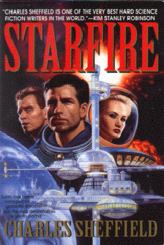

Starfireby Charles Sheffield
publisher: Bantam Books
Fiction, 400 pages | 
(book cover art, Copyright © 1999 Cliff Mills)
Used with Permission. |
Return to the Book MenuPrevious|Next
Description:
The sun's nearest neighbor, Alpha Centauri, has inexplicably exploded in a supernova explosion and debris from the explosion is traveling towards earth at very high speed. Humanity, still recovering from the effects of the flash from the explosion must rush to build a space shield to protect the planet from the second wave of damage from the star. But there are forces at work to prevent this mission from succeeding, including a serial killer on board the space station that houses the shield builders. How do you stop this killer? Send another serial killer after him, of course!
Recommended for: Mystery/thriller buffs, space enthusiasts.
Recommended for: Mystery/thriller buffs, space enthusiasts.
Did-you-read questions:
Deadline: February 1, 2005.
These should be easy questions, but you should have the questions ready and keep an eye out during your reading. Each question should be answered with 1-2 sentences.
Note: these questions are not probably not the most important part of the book! Your essay will not have to cover these questions!
- What condition makes Oliver Guest unable to visit the station in person?
- What was the American President's old job?
- What unusual creature is being bred in Gordy Rolfe's home?
- Who are Oliver Guest's children?
- Who was killing the girls in Sky City?
Report Questions:Deadline: Peer Review Session on February 8, 2005; paper due February 10, 2005.
You should write a 3 - 4 page essay on one of the following questions. Your essay should include examples and references to the book, unless otherwise specified. Page number references are sufficient for citing material from the primary book. If you use outside materials, cite your sources in full. If you would rather write on a different topic, you may, but clear it with Mr. Howe or Ms. Sullivan first.
- This story has several threads to it: a murder mystery, a love story, an impending cataclysm that can only be prevented by an engineering project, a scientific mystery behind the supernova, and the political machinations of men on earth. Which of these threads did you enjoy the most? Which would you rather do with out? Use examples from the book to justify your answer.
- Do you think that a space shield is a reasonable approach towards a threat from outer space? Why or why not?
- This story takes place in the not-too-distant future. What advances (big and small) would humanity have to make in technology in order to do the things described in this story? Do you think these advances are possible?
- Oliver Guest's previous crimes had an unusual motivation. Once you have read the book, what do you think of what he did? Was it a good thing or an evil one? (Or both?) Use examples from the book to justify your answer.
Graphic and Presentation:
Deadline: February 21 - March 3, 2005.You will give a 10 minute presentation on both of the following:
- Convince your peers that they should (or should not) read this book. (This may include a brief summary of the book.) Give examples of what was cool or worthwhile in the book, and what you got out of it (or didn't).
- Describe a (realistic) science idea that you learned about in this book, citing information from at least 2 external sources (other than the dictionary). If you would like help choosing or understanding an idea from your book, you are invited to come talk to Mr. Howe or Ms. Sullivan.
Note: This presentation should not be just a reading of your paper!Along with this presentation, you should have a graphic that will go with it. A Power Point presentation is recommended, but if you have a special idea for a something else, such as a model, an original video presentation, or a well done drawing/ painting/ sculpture/ etc., you may do so, provided it involves a similar level of effort and polish. Speak to Mr. Howe or Ms. Sullivan first if you are considering an alternate graphic format to the Power Point.
Return to the Book MenuPrevious|Next